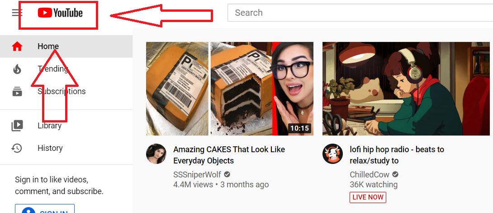

Good Design 1
When you click on YouTube's icon in the top left hand corner of the webpage, it takes you back to the home page. I think this is a really useful way to navigate the website. while it is not the most intuiative, it is a really easy way to navigate the webpage
